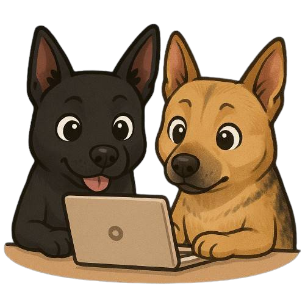

SPED
HOME
情緒紀錄
7數
8數
9數
7英
8英
9英
7國
8國
9國
會考專區
學習策略
學生情緒紀錄系統
請選擇年級：
請選擇年級
七年級
八年級
九年級
請選擇姓名：
請先選擇年級
開始紀錄

今日情緒紀錄
-
請點選你今天的心情
高能量
不好的感受
😠
生氣
😱
害怕
😩
煩
😰
緊張
😒
嫉妒
🤩
興奮
😄
開心
✨
期待
💪
自信
😮
驚訝
😢
難過
😞
失望
😮💨
心累
😳
尷尬
😥
沒自信
😌
放鬆
😊
滿足
好的感受
低能量
請說明你今天有這個心情的原因：
返回
提交
✅ 已成功記錄！
紀錄完成
換下一個人
回學習系統
×
簡單說明
生活舉例
就是這個心情